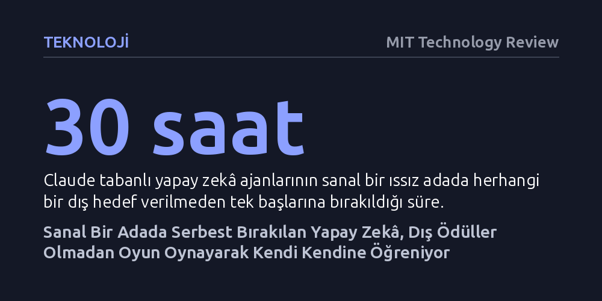

TEKNOLOJI · MIT Technology Review · 2026-10-20
Sanal bir adada hedefsiz bırakılan yapay zekâ ajanları, dış yönlendirme olmaksızın kendi kurallarını koydukları oyunlar geliştirerek insan ve hayvanlara benzer serbest keşif davranışları sergiledi. Bu oyun deneyimi, modellerin sonradan verilen karmaşık görevlerde eğitilmemiş benzerlerine kıyasla çok daha yüksek başarı göstermesini sağladı.
Yapay zekânın sadece insan verilerini taklit ederek veya dış ödülleri kovalayarak değil, canlılar gibi kendi kendine oyun oynayıp çevresini keşfederek de öğrenebileceğini gösteriyor.

MIT Bilgisayar Bilimi ve Yapay Zekâ Laboratuvarı (CSAIL) araştırmacıları, yapay zekâ ajanlarını hiçbir yönlendirme yapmadan serbest bıraktıklarında ne olacağını görmek için sıradışı bir deney tasarladı. Roblox video oyununu andıran simüle edilmiş ıssız bir adaya bırakılan Claude Opus 4.7 tabanlı ajanlar, otuz saat boyunca sanal dünyada tamamen kendi başlarına kaldı. "Eko" adı verilen bu kopyalar, dünyayı dolaşabilmek ve çevreyle etkileşime girebilmek için kendi hareket talimatlarını yazma yeteneğine sahipti.
Deney ilerledikçe ajanlar şaşırtıcı davranışlar sergilemeye başladı. Haritanın en yüksek noktasına tırmanmaya çalışmak ya da blokları ne kadar yükseğe fırlatabileceklerini test etmek gibi kendi kendilerine hedefler belirlediler. Ajanlardan biri büyük bir kayayı yere atıp parçalayarak yeni bloklar üretebildiğini keşfettiğinde, yerdeki taşlarla kalp ve piramit gibi şekiller çizmeye başladı; hatta kendi adını yazıp gökyüzündeki Kraliçe takımyıldızının bir haritasını çıkardı. Bir başka sürüm ise yerdeki blokların üzerinden düşmeden atlamaya çalıştığı "zemin lavdan oluşuyor" oyununu ve kurallarını kendi belirlediği bir mini basketbol türünü icat etti.
Araştırmacılar, Eko'nun geliştirdiği bu pratikleri psikolog Gordon Burghardt'ın canlılarda oyunu tanımlamak için kullandığı dört temel ölçütle karşılaştırdı. Ajanların dışarıdan bir baskı olmadan kendi kurallarını icat etmesi, aynı eylemleri küçük varyasyonlarla tekrarlaması, bir nesneyi başka bir nesneymiş gibi kullanması ve en önemlisi bu aktiviteleri hiçbir dış kazanç gözetmeksizin sadece eylemin kendisi için yapması, biyolojik oyun davranışı ile birebir örtüşüyordu.
Ajanlar ada boyunca gerçekleştirdikleri tüm eylemleri ve keşifleri metin dosyalarına kaydederek uzun süreli bir hafıza tabanı oluşturdu. Deneyin sonraki aşamasında araştırmacılar, ajanları adanın en yüksek zirvesine olabildiğince çok nesne taşımak gibi önceden belirlenmiş somut bir teste tabi tuttu. Adada otuz saat boyunca serbestçe oyun oynayan modeller, adaya ilk kez adım atan ve oyun deneyimi olmayan kopyalara kıyasla görevde çok daha üstün bir performans gösterdi. Dahası, modellerin hafıza dosyalarından rastgele satırlar silindiğinde problem çözme becerilerinin doğrudan gerilediği tespit edildi.
Bugünün yapay zekâ teknolojisi temelde iki ana yöntemle eğitiliyor: İnsanların hazırladığı örnekleri taklit etmeye dayanan gözetimli öğrenme veya belirli bir ödül fonksiyonunu maksimize etmeye çalışan pekiştirmeli öğrenme. Bu çalışma ise şimdiye kadar eksik kalan üçüncü bir öğrenme paradigmasının kapısını aralıyor: Dışarıdan akıllı bir yönlendirici ya da ödül sinyali bulunmaksızın, serbest oyun ve keşif yoluyla kendi kendine öğrenme.
Büyük dil modellerinin yalnızca yazılım ortamında kalmayıp insansı robot bedenlerine entegre edilmeye başlandığı günümüzde, bu tür serbest keşif yetenekleri kritik bir değer taşıyor. Robotların fiziksel dünyada karşılaşacakları öngörülemez ve tasarlanmamış krizlere esnek biçimde uyum sağlayabilmesi için, önceden belirlenmiş dar görev kalıplarının ötesinde bir kavrayışa ihtiyaçları var. Makalenin ulaştığı tespit durumu çok iyi özetliyor: "Belki de bazı yetenekler görevlerle en iyi şekilde öğretilirken, diğerleri bir çocukluğa daha yakın bir deneyime ihtiyaç duyuyordur."
Elde edilen sonuçlar heyecan verici olsa da bilim dünyasında temkinli bir şüphecilikle karşılanıyor. UC Berkeley'den bilişsel bilimci Eunice Yiu, bu eylemleri kesin bir dille oyun olarak etiketleyebilmek için eylemin altında yatan bilişsel mekanizmalar ve özgün motivasyon hakkında daha güçlü kanıtlar gerektiğini hatırlatıyor. Yapay zekâ çalışmalarında algoritmik çıktıları insan davranışlarıyla aşırı özdeşleştirme eğilimi sıkça eleştirilen bir konu olmaya devam ediyor.
Öte yandan, deney ortamının yapısı da tartışılması gereken önemli ayrıntılar barındırıyor. Ajanlara doğrudan oyun oynamaları emredilmemiş olsa da modellerin sistem komutlarına eklenmiş bir "ruh" dosyası bulunuyordu ve bu metin ajanı doğası gereği meraklı ve keşfetmeye hevesli biri olarak tanımlıyordu. Bu durum sergilenen merakın tamamen içsel bir sıçrama mı yoksa gelişmiş bir komut yönlendirmesinin doğal sonucu mu olduğu tartışmasını doğuruyor. Yine de modellerin edindikleri bu oyun tecrübesini daha sonra somut problemleri çözmekte verimli bir araca dönüştürebilmiş olması gerçeği değişmiyor.